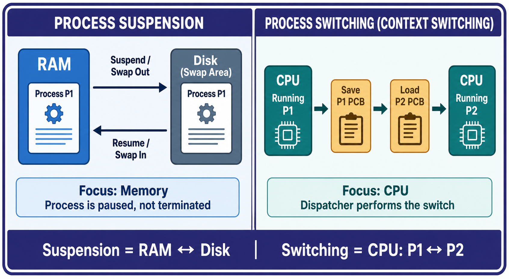

📘 OS Notes New
Computer Hub
← All sections
Practice Hub
/
Computer
/
OS Notes New
/ 2.F
SECTION 2 · SUBTOPIC 2.F
Process Suspension and Process Switching
RAM–Disk suspension, CPU context switching, PCB save/load, and dispatcher roles.

Generated comparison showing suspension as RAM–Disk movement and switching as CPU movement between processes.
← Section overview
Back to top ↑